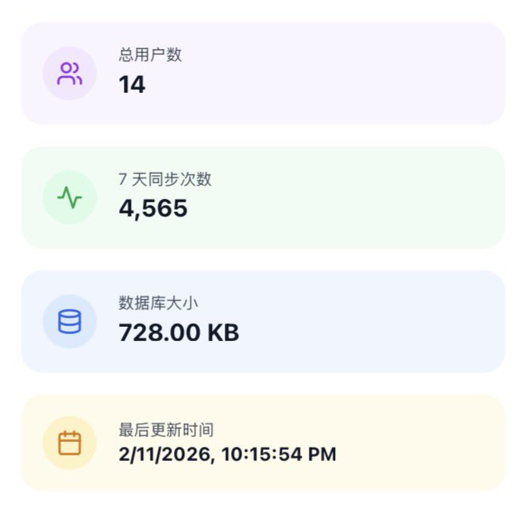
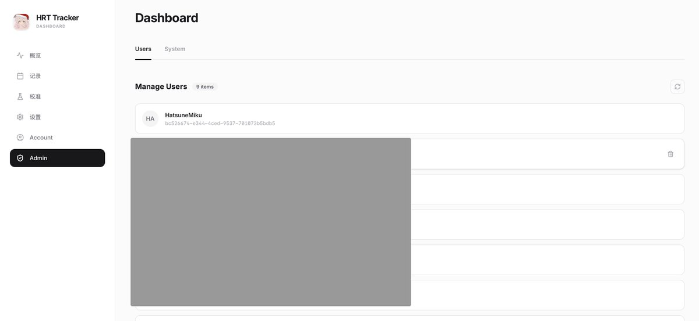

翅翅膀喵
@axzamyzed
@smiroyama 不像我我的系统就没后台，处于无政府状态，这是系统内唯一的统计接口


🍀🍥Smirnova🍥🍀
@smiroyama
演示：注册账户
由于目前还没有开发修改密码功能，因此强烈建议您将密码保存一份到密码管理器内
同时，密码要求大于 8 位字符，建议您设置复杂的密码，以保证安全性。
图 2 是管理员后端，管理员目前仅可以进行删除账户的操作，我将很快添加高级数据加密到云端等功能 https://t.co/yX9MysuVbg https://t.co/68BkKRUs3X